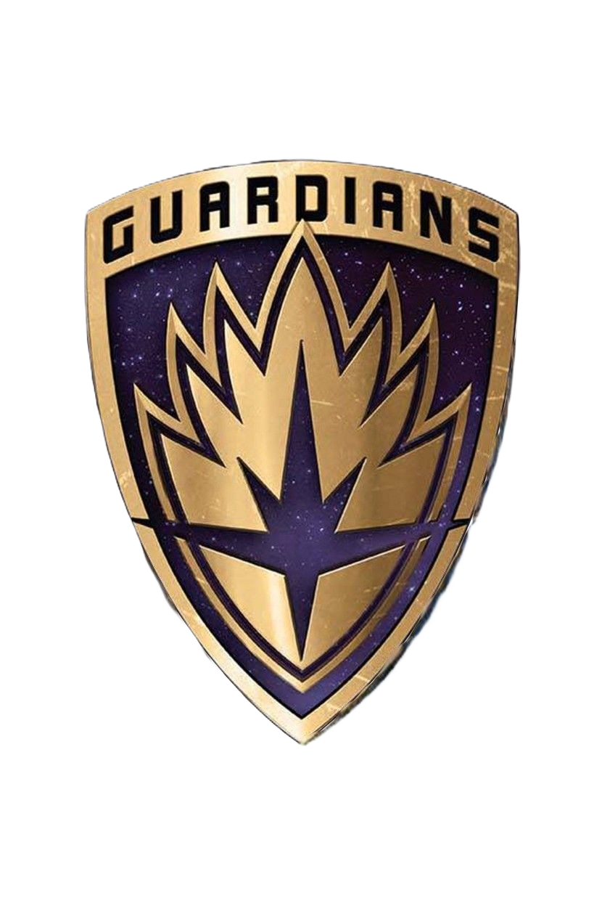
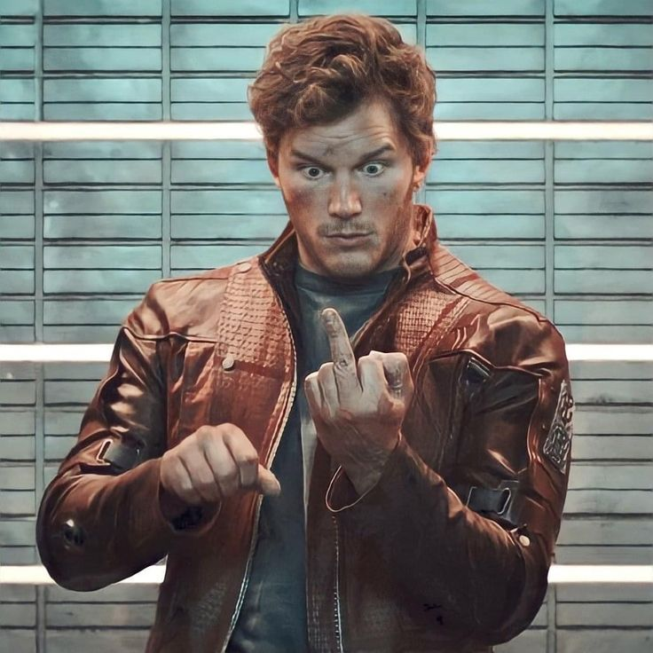
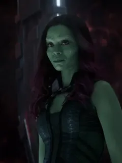
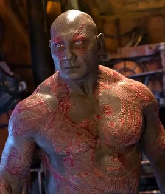
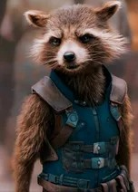
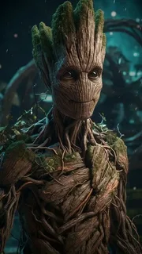

StragiДобро пожаловать на официальный сайт Стражей Галактики! Здесь вы найдете все о наших героях, их приключениях и последних новостях. Присоединяйтесь к нам в путешествии по космосу и узнайте больше о наших любимых персонажах!
На нашем сайте вы найдете информацию о фильмах, персонажах, галерее изображений и многом другом. Оставайтесь с нами, чтобы быть в курсе всех событий и новостей из мира Стражей Галактики!
В первом фильме "Стражи Галактики" зрители знакомятся с группой разношерстных героев, которые объединяются, чтобы спасти галактику от угрозы. Главные персонажи включают Питера Квилла (Звездного Лорда), Гамору, Дракса Разрушителя, Ракету и Грута. Вместе они сталкиваются с различными опасностями и приключениями, пытаясь защитить свою новую семью и спасти вселенную от злодея Ронана.
Во втором фильме "Стражи Галактики 2" команда продолжает свои приключения, сталкиваясь с новыми угрозами и раскрывая тайны прошлого. Они встречают новых персонажей, таких как Питер Квилл/Звездный Лорд, его отец Эго, а также других союзников и врагов. Фильм исследует темы семьи, дружбы и самопожертвования, а также предлагает зрителям захватывающие экшен-сцены и юмор.
В третьем фильме "Стражи Галактики" команда сталкивается с новыми вызовами и угрозами, которые угрожают их существованию. Они продолжают исследовать свою связь друг с другом и с прошлым, а также сталкиваются с новыми врагами и союзниками. Фильм обещает быть эмоциональным и захватывающим завершением трилогии, раскрывая судьбы любимых персонажей и предлагая зрителям незабываемые приключения в космосе.

Лидер команды, человек с загадочным прошлым.

Сильная и хитрая воительница, защищающая свою семью и команду.

Бывший воин, ищущий месть и стремящийся к примирению.

Интеллектуальный и юмористичный член команды, специализирующийся на технике и инженерии.

Мудрый и преданный член команды, обладающий уникальными способностями.